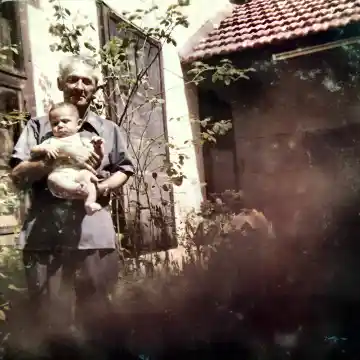
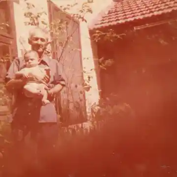
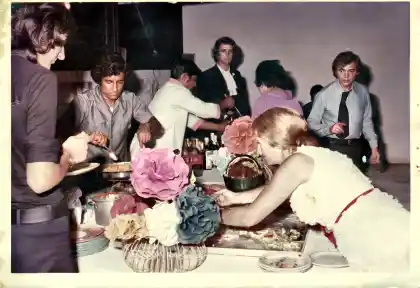
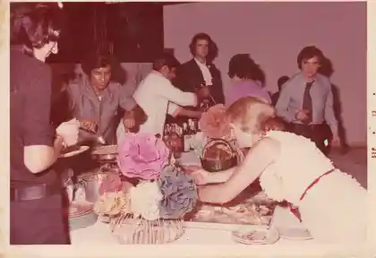
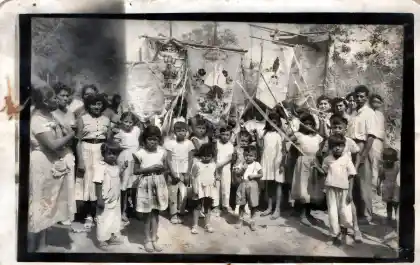
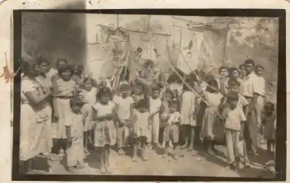

Restauramos las fotos viejas, rotas, manchadas o borrosas de tus seres queridos. Te la entregamos lista para imprimir, a tiempo para el 1 y 2 de noviembre.
Mándanos tu foto por WhatsAppFotos de nuestra propia familia, escaneadas y restauradas con el mismo proceso que usamos para tu pedido. Desliza para comparar.






Con tu celular, de frente, con buena luz y sin flash. Mándala por WhatsApp como documento. Ver cómo.
Te enviamos la foto restaurada con marca de agua para que veas cómo quedó. Sin costo y sin compromiso.
Pagas con tarjeta o transferencia y te mandamos el archivo en alta calidad, listo para imprimir en cualquier papelería o centro de fotos.
WhatsApp comprime las fotos normales y se pierde detalle de la cara. Como documento llega completa y la restauración sale mucho mejor.
Mejor todavía: escanéala a 600 dpi (1200 dpi si es una foto chica, tipo infantil), en color aunque sea blanco y negro, y guárdala en PNG.
La app gratuita Google PhotoScan quita los brillos de las fotos con acabado brillante.
Diseñamos el retrato con papel picado, flores de cempasúchil, su nombre, sus fechas y una frase que tú elijas. Lo imprimes del tamaño que quieras y lo pones en tu marco o directo en la ofrenda.
Quiero un retratoMándala de todos modos. La vista previa es gratis: si no queda bien, te lo decimos y no pagas nada.
No. El proceso recupera nitidez y detalle, pero respeta sus rasgos. Si algo no se parece, lo ajustamos o no lo cobramos.
Te entregamos el archivo digital en alta calidad. Lo puedes imprimir en cualquier centro de fotos o papelería por pocos pesos.
Con tarjeta de débito o crédito mediante un enlace seguro, o por transferencia. Pagas después de ver tu vista previa.
Solo las usamos para tu pedido. No las publicamos ni las compartimos, y las borramos al terminar si así lo pides.
Pedidos hasta el 30 de octubre para entrega a tiempo.
Mandar mi foto